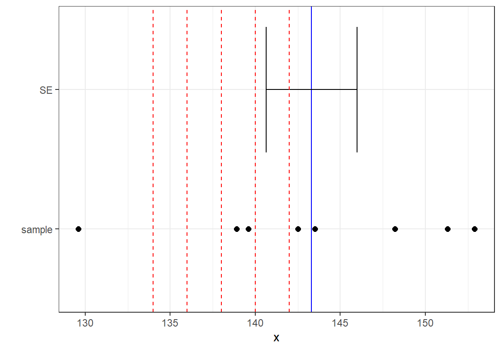

Chapter 12 수치형 변수에 대한 가설검정
수치형 변수에 대한 가설검정은 수치형 변수가 정규분포를 따르는 경우와 그렇지 않은 경우에 따라 가설검정 방법에서 차이가 있다.
그러므로 수치형 변수에 대한 가설검정을 수행하기 앞서 수치형 변수가 정규분포를 따르는지에 대해 검토해 보아야 한다.
수치형 변수의 정규성을 검토하는 방법은 8.1.2.3 절에서 설명한 Q-Q 그림을 그려보는 것과 shapiro.test()를 이용하여 정규성을 만족하는지에 대해 가설검정을 하는 것이 있다.
만약 수치형 변수가 정규성을 만족하지 않으면 분포를 가정하지 않는 비모수적 방법으로 가설검정을 수행하여야 한다.
Figure @(fig:num-test)는 수치형 변수에 대한 가설검정의 종류와 관련된 가설검정 방법을 요약하여 보여준다.
Figure 12.1: 수치형 변수에 대한 가설검정
본 장에서는 다양한 가설검정 상황에서 수치형 변수가 정규분포를 따른다는 가정하고 모수적으로 가설검정하는 방법을 주로 다루도록 한다.
12.1 단일 모집단에서의 모평균에 대한 검정
단일 모집단의 모평균 \(\mu\)에 대한 검정은 모집단의 분포가 평균 \(\mu\)와 분산 \(\sigma^2\)를 갖는 정규분포 \(N(\mu, \sigma^2)\)을 따른다고 가정한다. 모집단에 추출한 \(n\) 개의 데이터로 이루어진 표본을 \((x_1, x_2, \ldots, x_n)\)이라고 하자. 그러면 표본평균 \(\bar{x}\)와 표본분산 \(s^2\)은 각각 다음과 같이 정의된다.
\[\begin{align} \bar{x} =& \frac{1}{n} \sum_{i=1}^{n} x_i \\ s^2 =& \frac{1}{n-1} \sum_{i=1}^{n} \left( x_i- \bar{x} \right)^2 \end{align}\]
단일 모집단의 모평균의 검정에서는 귀무가설은 ‘모평균 \(\mu\)가 특정값 \(\mu_0\)이다’로 수립되고, 대립가설은 ’모평균 \(\mu\)가 \(\mu_0\)가 아니다’, ‘더 크다’, ‘더 작다’ 중 하나로 수립된다. 단일 모집단의 모평균의 가설검정은 모분산이 알려져 있는 경우와 그렇지 않은 경우에 따라 검정통계량과 검정통계량의 분포가 달라진다. 모분산이 알려져 있는 경우에는 정규분포로 모분산이 알려져 있지 않은 경우에는 t-분포로 가설검정을 한다. 대부분의 경우 모평균을 모르기 때문에 가설검정을 하는 경우에는 모분산에 대한 정보도 알려져 있지 않은 경우가 많다. 그렇기 때문에 여기서는 모분산 \(\sigma^2\)이 알려져 있지 않은 경우만을 다루도록 한다.
모분산 \(\sigma^2\)이 알려져 있지 않은 경우에 다음과 같이 정의되는 검정통계량 \(T\)는 자유도(degree of freedom)가 \((n-1)\)인 t-분포를 따른다.
\[ T = \frac{\bar{x} - \mu_0}{ s / \sqrt{n}} \, \sim \, t(n-1) \]
대립가설에 따라 유의수준 \(\alpha\)에 대해 기각역은 다음 표와 같다. 왜냐하면 대립가설이 \(\mu < \mu_0\)이면, 대립가설이 채택되는 경우는 표본평균 \(\bar{x}\)가 \(\mu_0\)보다 예외적으로 작게 나올 때이므로 기각역은 분포의 왼쪽에 놓이게 된다. 반대로 대립가설이 \(\mu > \mu_0\)이면, 대립가설이 채택되는 경우는 표본평균 \(\bar{x}\)가 \(\mu_0\)보다 예외적으로 작게 나올 때이므로 기각역은 분포의 오른쪽에 놓이게 된다. 대립가설이 \(\mu \neq \mu_0\)이면, 표본평균이 귀무가설의 평균보다 배우 크거나 작게 나오는 두 영역이 기각역으로 설정된다.
| 귀무가설 (\(H_0\)) | 대립가설 (\(H_1\)) | 기각역 |
|---|---|---|
| \(\mu = \mu_0\) | \(\mu \neq \mu_0\) | \(T \ge t_{\alpha/2}(n-1), T \le -t_{\alpha/2}(n-1)\) |
| \(\mu = \mu_0 \, (\mu \ge \mu_0)\) | \(\mu < \mu_0\) | \(T \le -t_{\alpha}(n-1)\) |
| \(\mu = \mu_0 \, (\mu \le \mu_0)\) | \(\mu > \mu_0\) | \(T \ge t_{\alpha}(n-1)\) |
R의 기본 패키지인 stat 패키지의 t.test() 함수는 t-분포를 사용하여 모평균에 대한 가설검정을 수행한다. 다음은 t.test() 함수를 이용하여 단일 모집단의 모평균에 대하여 가설검정하는 문법이다.
t.test(x = 표본, mu = 귀무가설_모평균, alternative = "대립가설_종류")
t.test(x = 표본, mu = 귀무가설_모평균,
alternative = "대립가설_종류", conf.level = 신뢰수준) # 신뢰구간의 신뢰수준을 조정t.test() 함수의 인수로는 stat 패키지의 가설검정 함수들에 공통적으로 사용되는 인수와 모평균 검정과 관련된 인수가 있다. t.test()의 다음 인수는 단일 모집단의 모평균 검정과 관련된 인수이다.
x: 가설검정을 위한 표본 데이터mu: 귀무가설의 모평균 값
뒤에서 살펴보겠지만 두 모집단에 대한 모평균에 대한 가설검정에 사용되는 paired와 var.equal 등의 인수들도 있다.
다음의 두 인수는 범주형 변수의 가설검정에서 설명했던 stat 패키지의 가설 검정 함수들에 공통적으로 사용되는 인수이다.
alternative: 대립가설의 형식. \(\mu \neq \mu_0\) 형식이면"two.sided"로, \(\mu < \mu_0\) 형식이면"less"로, \(\mu > \mu_0\) 형식이면"greater"로 값을 입력한다.conf.level: 대부분의 가설검정 함수가 신뢰구간도 함께 알려주는데 이 인수는 신뢰구간의 신뢰수준을 지정한다. 기본값은 0.95로 95% 신뢰구간을 알려준다.
Example 12.1 2010년도 초등학교 4학년의 평균 키가 142cm이었고 표준편차는 알려져 있지 않다. 2020년에 8명의 초등학교 4학년의 키를 측정하여 다음과 같은 데이터를 얻었다.
142.5 138.9 139.6 148.2 152.9 129.6 143.5 151.3
10년 동안 초등학교 4학년 학생들의 평균 키가 더 커졌다고 할 수 있는가? 유의수준 5%에서 가설검정하시오.
Example 12.1의 가설검정은 키가 커졌는지를 검정하고자 하는 것이므로 \(\mu\)를 2020년의 초등학교 4학년의 평균 키라고 하면 귀무가설과 대립가설은 다음과 같이 설정한다.
\[ \begin{align} H_0: & \quad \mu = 142 \\ H_1: & \quad \mu > 142 \end{align} \]
위의 가설을 t-분포로 가설검정하려면 초등학생의 키가 정규분포를 따르는지 먼저 확인해 보아야 한다.
> x <- c(142.5, 138.9, 139.6, 148.2, 152.9, 129.6, 143.5, 151.3)
> library(ggplot2)
> ggplot(NULL, aes(sample = x)) +
+ geom_qq() + geom_qq_line(color = "red")
> shapiro.test(x)
Shapiro-Wilk normality test
data: x
W = 0.95489, p-value = 0.7603shapiro.test()로 분포의 정규성에 대하여 가설검정을 한 결과 p-값이 크게 나왔으므로 분포가 정규분포를 따른다는 귀무가설을 채택한다.
그런데 Shapiro 검정을 할 때 주의할 점은 Shapiro 검정은 표본의 크기 \(n\)이 커질수록 p-값이 작아지는 경향이 있다. 그래서 \(n\)이 작을 때는 정규분포와의 차이에 대해서 둔감해지고, \(n\)이 커지면 민감해지는 경향이 있다.
그러므로 표본의 크기가 커지면 Shapiro 검정에서 p-값이 어느 정도 크게 나오더라도 정규성을 기각하는 데에는 신중하여야 한다.
그리고 표본이 매우 커지면 중심극한정리에 의해 표본의 평균은 정규분포에 가까워지고, \(T\) 검정통계량도 표준정규분포에 근접하므로, 정규성 검정에 너무 연연하지 않아도 된다.
분포의 정규성을 가정할 수 있으므로 t.test()을 사용하여 모평균에 대하여 가설검정을 하면 다음과 같은 결과를 얻는다.
> t.test(x, mu = 142, alternative = "greater")
One Sample t-test
data: x
t = 0.49012, df = 7, p-value = 0.3195
alternative hypothesis: true mean is greater than 142
95 percent confidence interval:
138.239 Inf
sample estimates:
mean of x
143.3125 t-검정을 통해 우리는 다음 사실을 알 수 있다.
- 표본 평균 \(\bar{x}\)는 143.3125이다.
- p-값은 0.3195181로 유의수준 0.05에서 귀무가설을 채택한다. (대립가설을 기각한다.)
표본이 귀무가설의 모평균 값에 얼만큼 차이가 나야지 귀무가설을 기각하는지를 살펴보기 위하여 Example 12.1의 표본 데이터와 표본 평균을 가지고 귀무가설의 \(\mu\)를 다양한 값으로 변화시키며 가설검정을 수행해 보자. 아래 그래프는 표본 데이터와 표본의 평균을 그래프에 표시하고, 가설검정을 수행할 귀무가설의 모평균의 다양한 값을 그래프에 표시한 것이다. 점은 표본의 데이터를, 실선의 수직선은 표본의 평균 \(\bar{X}\)를, 실선의 수평선은 표준 오차 \(S/\sqrt{n}\)을, 파선의 수직선은 가설검정을 수행할 귀무가설의 모평균 \(\mu\) 값을 보여준다.

앞의 가설검정에서 \(\mu=142\)의 귀무가설은 채택되었다. 다음 표는 나머지 \(\mu\)에 대해서도 동일한 가설검정을 수행해본 결과이다.
| mu | t | p.value | decision |
|---|---|---|---|
| 142 | 0.4901201 | 0.3195181 | 채택 |
| 140 | 1.2369699 | 0.1279918 | 채택 |
| 138 | 1.9838196 | 0.0438433 | 기각 |
| 136 | 2.7306694 | 0.0146552 | 기각 |
| 134 | 3.4775191 | 0.0051504 | 기각 |
12.2 두 모집단에서의 모평균 차이에 대한 검정
두 모집단의 모평균에 대한 검정은 두 모집단의 분포가 각각 정규분포 \(N(\mu_1, \sigma_1^2)\)과 \(N(\mu_2, \sigma_2^2)\)을 따른다고 가정한다. 가설검정을 위해 각 모집단에서 \(n_1\) 개와 \(n_2\) 개의 크기의 표본 \((x_{1,1}, x_{1,2}, \ldots, x_{1,n_1})\)과 \((x_{2,1}, x_{2,2}, \ldots, x_{2,n_2})\)을 추출하였다고 하자. 그러면 두 표본의 표본평균 \(\bar{x}_1\)과 \(\bar{x}_2\), 표본분산 \(s_1^2\)과 \(s_2^2\)은 각각 다음과 같이 정의된다.
\[\begin{align} \bar{x}_i =& \frac{1}{n_i} \sum_{j=1}^{n_i} x_{i, j} \\ s_i^2 =& \frac{1}{n_i - 1} \sum_{j=1}^{n_i} \left( x_{i, j} - \bar{x}_i \right)^2 \end{align}\]
단, \(i=1,2\).
두 모집단의 모평균 차이에 대한 가설검정에서는 귀무가설은 ‘모평균의 차이 \((\mu_1 - \mu_2)\)가 어떤 값 \(\delta_0\)이다’로 수립되고, 대립가설은 ’모평균의 차이가 \(\delta_0\)가 아니다’, ‘더 큰다’, ‘더 작다’ 중 하나로 수립된다. 그런데 두 모집단의 모평균 차이에 대한 가설검정은 두 모집단의 모분산이 알려져 있는 경우와 그렇지 않은 경우에 따라 검정통계량과 검정통계량의 분포가 달라진다. 모분산이 알려져 있는 경우에는 정규분포로, 모분산이 알려져 있지 않은 경우에는 t-분포를 이용하여 가설검정을 한다. 일반적으로 모분산은 알려져 있지 않은 경우가 많으므로 여기서는 모분산이 알려져 있지 않은 경우만을 다루기로 한다.
12.2.1 등분산이 가정되는 경우의 모평균 차이 검정
모분산이 알려져 있지 않은 경우에도 모분산에 대한 다음의 두 가정에 따라 검정통계량이 달라진다. 먼저 모분산은 알려져 있지 않지만 두 모집단의 분산이 같다(\(\sigma_1^2 = \sigma_2^2\))고 가정되는 경우이다. 이 경우에는 두 모집단의 공통분산 \(\sigma^2\)에 대한 합동추정량 \(s_p^2\)를 다음과 같이 정의할 수 있다.
\[ s_p^2 = \frac{(n_1 -1 ) \, s_1^2 + (n_2 -1) \, s_2^2}{n_1 + n_2 - 2}. \]
그러면 다음과 같은 검정통계량 \(T\)는 자유도가 \((n_1 + n_2 -2)\) 인 t-분포를 따른다.
\[ T = \frac{(\bar{x}_1 - \bar{x}_2) - (\mu_1 - \mu_2)}{ s_p \sqrt{\frac{1}{n_1} + \frac{1}{n_2}}} \, \sim \, t(n_1 + n_2 -2) \]
대립가설에 따라 유의수준 \(\alpha\)에 대해 기각역은 다음 표와 같다.
| 귀무가설 (\(H_0\)) | 대립가설 (\(H_1\)) | 기각역 |
|---|---|---|
| \(\mu_1 - \mu_2 = \delta_0\) | \(\mu_1 - \mu_2 \neq \delta_0\) | \(T \ge t_{\alpha/2}(n_1 + n_2-2), T \le -t_{\alpha/2}(n_1 + n_2-2)\) |
| \(\mu_1 - \mu_2 = \delta_0\) | \(\mu_1 - \mu_2 < \delta_0\) | \(T \le -t_{\alpha}(n_1 + n_2-2)\) |
| \(\mu_1 - \mu_2 = \delta_0\) | \(\mu_1 - \mu_2 > \delta_0\) | \(T \ge t_{\alpha}(n_1 + n_2-2)\) |
R에서 두 모집단의 분산이 같다고 가정될 때의 모평균의 차이 검정은 t.test() 함수를 이용한 다음과 같은 문법으로 수행된다.
t.test(표본1, 표본2, alternative = "대립가설 종류", var.equal = TRUE)일반적으로 두 모집단이 등분산인지 아닌지에 대한 판단은 이론적인 근거나 과거의 연구결과를 참조하여 결정하기도 하지만, 표본의 분산을 사용하여 두 모집단의 등분산성에 대하여 직접 가설검정을 할 수도 있다. 두 모집단에서 추출된 표본의 크기가 각각 \(n_1\)과 \(n_2\)이고 표본분산이 \(s_1^2\)과 \(s_2^2\)라고 하면, 두 모집단의 분산이 같다는 귀무가설이 참이라면 다음과 같은 \(F\) 검정통계량은 자유도가 \((n_1 -1, n_2 -1)\)인 F 분포를 따른다.
\[ F = \frac{S_1^2}{S_2^2} \sim F(n_1-1, n_2-1). \]
R에서는 var.test() 함수를 사용하여 다음처럼 두 모집단의 등분산성을 검정한다.
var.test(표본1, 표본2)Example 12.2 2010년도와 2020년도에 각각 초등학교 4학년 8명에 대하여 키를 측정하였다. 초등학교 4학년 키의 분산은 알려져 있지 않다. 2010년과 2020년 초동학교 4학년 학생의 평균키에 차이가 있는지를 유의수준 5%에서 가설검정하시오.
2010년 139.4 139.8 137.2 149.2 151.2 131.8 141.5 152.3
2020년 142.5 138.9 139.6 148.2 152.9 129.6 143.5 151.3Example 12.2의 가설검정에서 2010년도 키의 평균을 \(\mu_1\), 2020년도 키의 평균을 \(\mu_2\)라고 할 때 평균 키가 같은지 다른지를 가설검정하는 것이므로 귀무가설과 대립가설은 다음과 같다.
\[ \begin{align} H_0: & \quad \mu_1 - \mu_2 = 0 \\ H_1: & \quad \mu_1 - \mu_2 \neq 0 \end{align} \] 위의 가설을 t-분포로 가설검정하려면 초등학생의 키가 정규분포를 따르는지 먼저 확인해 보아야 한다.
> x2010 <- c(139.4, 139.8, 137.2, 149.2, 151.2, 131.8, 141.5, 152.3)
> x2020 <- c(142.5, 138.9, 139.6, 148.2, 152.9, 129.6, 143.5, 151.3)
> shapiro.test(x2010)
Shapiro-Wilk normality test
data: x2010
W = 0.92354, p-value = 0.4592> shapiro.test(x2020)
Shapiro-Wilk normality test
data: x2020
W = 0.95489, p-value = 0.7603shapiro.test()로 분포의 정규성에 대하여 가설검정을 한 결과 p-값이 크게 나왔으므로 두 수치형 변수 모두 정규분포를 따른다는 귀무가설을 채택한다.
두 모집단의 모평균을 가설검정하려면 등분산을 가정할 수 있는지 아닌지를 확인해 보아야 한다. 수치형 변수가 정규분포를 따를 때 두 집단의 분산의 동일성 여부는 F-검정으로 알아본다. R에서는 var.test() 함수가 두 모집단의 분산의 차이를 가설검정해 준다. 검정 결과 p-값이 크게 나와 두 집단의 분산이 같다는 귀무가설이 채택된다.
> var.test(x2010, x2020)
F test to compare two variances
data: x2010 and x2020
F = 0.93723, num df = 7, denom df = 7, p-value = 0.934
alternative hypothesis: true ratio of variances is not equal to 1
95 percent confidence interval:
0.1876365 4.6813660
sample estimates:
ratio of variances
0.9372274 분포의 정규성과 등분산성을 가정할 수 있으므로 t.test()을 사용하여 모평균 차이에 대하여 다음과 같이 가설검정을 할 수 있다.
t.test()에서 두 모집단의 모평균 차이를 가설검정할 때는 var.equal 인수를 사용하여 분산을 같다고 가정하는지 아닌지를 설정할 수 있다.
> t.test(x2010, x2020, alternative = "two.sided", var.equal = TRUE)
Two Sample t-test
data: x2010 and x2020
t = -0.1375, df = 14, p-value = 0.8926
alternative hypothesis: true difference in means is not equal to 0
95 percent confidence interval:
-8.506629 7.481629
sample estimates:
mean of x mean of y
142.8000 143.3125 t-검정을 통해 우리는 다음 사실을 알 수 있다.
- 표본 평균 \(\bar{x}_1\)과 \(\bar{x}_2\)는 각각 142.8, 143.3125이다.
- p-값은 0.8925925로 유의수준 0.05에서 귀무가설을 채택한다. (대립가설을 기각한다.)
12.2.2 등분산이 가정될 수 없는 경우의 모평균의 차이 검정
모분산이 알려져 있지 않고 두 모집단의 분산이 서로 다르다(\(\sigma_1^2 \neq \sigma_2^2\))고 가정되는 경우에는 검정통계량 \(T\)는 다음과 같이 정의되고 자유도가 \(\nu\)인 t-분포를 근사적으로 따른다.
\[ T = \frac{(\bar{x}_1 - \bar{x}_2) - (\mu_1 - \mu_2)}{ \sqrt{\frac{s_1^2}{n_1} + \frac{s_2^2}{n_2}}} \, \sim \, t(\nu) \] 단,
\[ \nu = \frac{\left( s_1^2 / n_1 + s_2^2 / n_2 \right)^2}{\frac{(s_1^2/n_1)^2}{n_1 -1} + \frac{(s_2^2/n_2)^2}{n_2 - 1}}. \]
대립가설에 따라 유의수준 \(\alpha\)에 대해 기각역은 다음 표와 같다.
| 귀무가설 (\(H_0\)) | 대립가설 (\(H_1\)) | 기각역 |
|---|---|---|
| \(\mu_1 - \mu_2 = \delta_0\) | \(\mu_1 - \mu_2 \neq \delta_0\) | \(T \ge t_{\alpha/2}(\nu), T \le -t_{\alpha/2}(\nu)\) |
| \(\mu_1 - \mu_2 = \delta_0\) | \(\mu_1 - \mu_2 < \delta_0\) | \(T \le -t_{\alpha}(\nu)\) |
| \(\mu_1 - \mu_2 = \delta_0\) | \(\mu_1 - \mu_2 > \delta_0\) | \(T \ge t_{\alpha}(\nu)\) |
R에서 두 모집단의 분산이 다르다고 가정될 때의 모평균의 차이 검정은 t.test() 함수를 이용한 다음과 같은 문법으로 수행된다.
t.test(표본1, 표본2, alternative = "대립가설 종류", var.equal = FALSE)Example 12.3 기존 공정과 새 공정에서 생산되는 제품의 지름을 측정하여 아래와 같은 데이터를 얻었다. 기존 공정보다 새 공정에서 생산한 제품의 지름이 작다고 할 수 있는지 유의수준 5%로 검정하시오.
기존공정 5.2 4.7 5.0 5.3 4.9 4.5 5.6 5.0 5.1 4.8 5.5 4.1
새 공정 4.6 4.4 4.6 4.7 4.5 4.3 4.1 4.7 4.5 4.2Example 12.3의 가설검정에서 기존 공정 제품의 평균 지름을 \(\mu_1\), 새 공정의 평균 지름을 \(\mu_2\)라고 할 때 새 공정의 평균 지름이 더 작다는 것을 가설검정하는 것이므로 귀무가설과 대립가설은 다음과 같다.
\[ \begin{align} H_0: & \quad \mu_1 - \mu_2 = 0 \\ H_1: & \quad \mu_1 - \mu_2 > 0 \end{align} \]
위의 가설을 t-분포로 가설검정하려면 제품 지름이 정규분포를 따르는지 먼저 확인해 보아야 한다.
> x_old <- c(5.2, 4.7, 5.0, 5.3, 4.9, 4.5, 5.6, 5.0, 5.1, 4.8, 5.5, 4.1)
> x_new <- c(4.6, 4.4, 4.6, 4.7, 4.5, 4.3, 4.1, 4.7, 4.5, 4.2)
> shapiro.test(x_old)
Shapiro-Wilk normality test
data: x_old
W = 0.97539, p-value = 0.9583> shapiro.test(x_new)
Shapiro-Wilk normality test
data: x_new
W = 0.92994, p-value = 0.4473shapiro.test()로 분포의 정규성에 대하여 가설검정을 한 결과 p-값이 크게 나왔으므로 분포가 정규분포를 따른다는 귀무가설을 채택한다.
두 모집단의 모평균을 가설검정하려면 등분산을 가정할 수 있는지 아닌지를 확인해 보아야 한다. 검정 결과 p-값이 0.05보다도 작게 나와 두 집단의 분산이 같다는 귀무가설이 유의수준 5%에서 기각된다.
> var.test(x_old, x_new)
F test to compare two variances
data: x_old and x_new
F = 4.1388, num df = 11, denom df = 9, p-value = 0.04186
alternative hypothesis: true ratio of variances is not equal to 1
95 percent confidence interval:
1.057968 14.849772
sample estimates:
ratio of variances
4.138849 분포의 정규성은 가정되지만 등분산은 가정할 수 없으므로 t.test()을 사용하여 모평균 차이에 대하여 다음과 같이 가설검정을 하는데, var.equal = FALSE로 가설검정하여야 한다. 그리고 대립가설은 “greater”로 설정된다.
> t.test(x_old, x_new, alternative = "greater", var.equal = FALSE)
Welch Two Sample t-test
data: x_old and x_new
t = 3.7379, df = 16.598, p-value = 0.0008483
alternative hypothesis: true difference in means is greater than 0
95 percent confidence interval:
0.2749873 Inf
sample estimates:
mean of x mean of y
4.975 4.460 t-검정을 통해 우리는 다음 사실을 알 수 있다.
- 표본 평균 \(\bar{x}_1\)과 \(\bar{x}_2\)는 각각 4.975, 4.46이다.
- p-값은 0.0008483222로 유의수준 0.05에서 귀무가설을 기각한다. (대립가설을 채택한다.)
즉, 가설검정 결과 신규공정의 지름이 더 작아졌다는 유의미한 통계적 증거가 있다고 판단한다.
12.2.3 데이터프레임에서 모평균 차이 검정
Example 12.4 course 데이터는 어떤 과목의 수강생에 대한 정보이다.
이 과목은 최종점수(score)의 평균에 성별(gender) 차이가 있는지에 대해 유의수준 5%에서 가설검정하시오.
Example 12.4처럼 모평군의 차이에 대한 가설 검정은 데이터프레임의 수치형 변수(score)를 범주형 변수(gender)의 값에 따라 두 집단으로 나누어 평균의 차이를 검정하는 경우가 많다.
이러한 경우 다음처럼 4.1.4 절에서 배운 벡터의 필터을 사용하여 수치형 변수를 범주형 변수의 값에 따라 두 벡터로 나누어 지금까지 사용한 t.test()와 var.test()를 이용하여 가설검정을 수행할 수 있다.
> library(bizstatp)
> score_F <- course$score[course$gender == "F"]
> score_M <- course$score[course$gender == "M"]
> var.test(score_F, score_M)
F test to compare two variances
data: score_F and score_M
F = 0.36437, num df = 17, denom df = 26, p-value = 0.0343
alternative hypothesis: true ratio of variances is not equal to 1
95 percent confidence interval:
0.1560132 0.9246962
sample estimates:
ratio of variances
0.3643656 > t.test(score_F, score_M, alternative = "two.sided")
Welch Two Sample t-test
data: score_F and score_M
t = 0.20677, df = 42.686, p-value = 0.8372
alternative hypothesis: true difference in means is not equal to 0
95 percent confidence interval:
-7.518363 9.235770
sample estimates:
mean of x mean of y
71.97611 71.11741 그러나 매번 범주의 값에 따라 수치형 변수의 데이터를 나누는 일은 번거로운 일이기 때문에 var.test()와 t.test() 모두 첫번째 인수로 수식을 사용하여 범주형 변수의 값에 따라 수치형 변수의 값을 나누어 가설검정하도록 지정할 수 있다. 수식의 왼편에는 검정할 수치형 변수가, 오른편에는 수치형 변수를 나눌 범주형 변수가 지정된다. 그리고 data 인수에 사용할 데이터 프레임이 지정된다.
var.test(수치형_변수 ~ 범주형_변수, data = 데이터)
t.test(수치형_변수 ~ 범주형_변수, data = 데이터, alternative, var.equal)성별로 최종점수(score)에 차이가 있었는지를 가설검정하기 위해서는 먼저 성별 최종점수가 각각 정규분포를 따르는지 확인해 보자. 다음 문법을 사용하면 수치형 변수를 범주형 변수로 나누어 정규성 검정을 수행할 수 있다.
tapply(데이터$수치형_변수, 데이터$범주형_변수, shaprio.test)다음은 성별 최종점수의 정규성을 검정한 결과이다.
> tapply(course$score, course$gender, shapiro.test)$F
Shapiro-Wilk normality test
data: X[[i]]
W = 0.93595, p-value = 0.2467
$M
Shapiro-Wilk normality test
data: X[[i]]
W = 0.87635, p-value = 0.004011남학생의 최종점수가 정규분포를 따르지 않는 것으로 나온다. 중간과 기말고사를 안 본 학생 때문에 발생한 문제일 수 있으므로 이 학생을 제외하고 정규성 검정을 다시해 보자.
> course_omitted <- na.omit(course)
> tapply(course_omitted$score, course_omitted$gender, shapiro.test)$F
Shapiro-Wilk normality test
data: X[[i]]
W = 0.93595, p-value = 0.2467
$M
Shapiro-Wilk normality test
data: X[[i]]
W = 0.94984, p-value = 0.23예외적인 데이터를 제외하니 남자와 여자 모두 최종점수의 정규성 가정을 기각할 만한 통계적 증거를 가지고 있지 않다.
성별 최종점수의 평균 차이를 가설검정을 하려면 등분산을 가정할 수 있는지를 확인해 보아야 한다.
> var.test(score ~ gender, data = course_omitted)
F test to compare two variances
data: score by gender
F = 0.69443, num df = 17, denom df = 25, p-value = 0.4409
alternative hypothesis: true ratio of variances is not equal to 1
95 percent confidence interval:
0.2942656 1.7696899
sample estimates:
ratio of variances
0.6944266 등분산 검정 결과에서 p-값이 큰 값이 나왔으므로 남녀 간의 최종성적의 분산은 같다는 귀무가설을 채택한다. 따라서 등분산으로 남녀의 최종성적의 평균의 차이에 대해 가설검정을 한다.
> t.test(score ~ gender, data = course_omitted,
+ alternative = "two.sided", var.equal = TRUE)
Two Sample t-test
data: score by gender
t = -0.41353, df = 42, p-value = 0.6813
alternative hypothesis: true difference in means between group F and group M is not equal to 0
95 percent confidence interval:
-8.772914 5.788982
sample estimates:
mean in group F mean in group M
71.97611 73.46808 t-검정을 통해 우리는 다음 사실을 알 수 있다.
- 표본 평균 \(\bar{x}_1\)과 \(\bar{x}_2\)는 각각 71.9761111, 73.4680769이다.
- p-값은 0.6813205로 유의수준 0.05에서 귀무가설을 채택한다. (대립가설을 기각한다.)
즉, 남녀의 최종성적의 평균 차이가 있다는 유의미한 통계적 증거를 찾지 못했다.
마찬가지로 다음은 분반별 최종성적의 차이에 대해 가설검정한 결과이다. 분반으로 최종점수를 나누어도 정규성과 등분산성이 만족되었고, 최종점수의 평균에 대해 통계적으로 유의미한 차이는 없었다.
> tapply(course_omitted$score, course_omitted$class, shapiro.test)$`1`
Shapiro-Wilk normality test
data: X[[i]]
W = 0.94064, p-value = 0.2041
$`2`
Shapiro-Wilk normality test
data: X[[i]]
W = 0.95717, p-value = 0.4343> var.test(score ~ class, data = course_omitted)
F test to compare two variances
data: score by class
F = 1.0552, num df = 21, denom df = 21, p-value = 0.9032
alternative hypothesis: true ratio of variances is not equal to 1
95 percent confidence interval:
0.4381008 2.5415554
sample estimates:
ratio of variances
1.055205 > t.test(score ~ class, data = course_omitted,
+ alternative = "two.sided", var.equal = TRUE)
Two Sample t-test
data: score by class
t = -1.7005, df = 42, p-value = 0.09643
alternative hypothesis: true difference in means between group 1 and group 2 is not equal to 0
95 percent confidence interval:
-12.786513 1.091967
sample estimates:
mean in group 1 mean in group 2
69.93409 75.78136 12.2.4 짝진 표본에서의 모평균 차이에 대한 가설검정
지금까지 설명한 두 모집단의 모평균 차이에 대한 가설검정은 두 표본이 서로 다른 모집단에서 독립적으로 추출되는 경우에 사용하는 가설검정이다. 그런데 어떤 경우에는 두 표본이 서로 대응되어 추출되는 것이 더 좋은 경우가 있다. 이렇게 두 표본이 서로 짝지어져 추출된 표본을 짝진 표본 또는 대응 표본이라고 한다.
두 모집단의 모평균 차이에 대한 가설검정을 할 때, 두 모집단에서 추출된 표본은 동질적이어야만 정확한 가설검정을 할 수 있다. 예를 들어 두 종류의 타이어의 마모성 차이에 대한 가설검정을 하기위해 실험에 참여한 자동차를 두 그룹으로 나누어 각기 다른 종류의 타이어를 장착한 후 동일한 거리를 운행한 뒤 타이어가 마모된 정도의 평균을 측정하였다고 하자. 이러한 실험이 정확하기 위해서는 두 표본 사이에 자동차의 종류가 고르게 분포되어야 할 것이다. 예를 들어 한 표본에는 중형차가 매우 많이 분포되어 있고 다른 한 표본에는 경차가 많이 분포되어 있다면 자동차의 중량의 차이 때문에 타이어 종류에 따른 마모성을 정확히 판단하기 어렵다. 또한 운전자의 운전 습관이 두 표본 사이에서 차이가 크다면 이 또한 타이어 마모 차이에 대한 공정한 결과를 얻기 힘들다.
이러한 문제점을 해결하는 방법 중 하나가 찍진 표본을 구성하여 실험을 수행하는 것이다. 실험단위를 동질적인 쌍으로 묶어 실험을 하면 실험에서 확인하고자 하는 요인을 제외한 다른 요인들은 동일하게 통제되므로 실험하고자 하는 요인에 의한 평균의 차이만 검정할 수 있다. 예를 들어 두 종류의 타이어를 동일한 차의 오른쪽과 왼쪽에 장착하여 마모 정도를 테스트하면, 자동차의 종류나 운전자의 운전습관이 모두 동일하므로 타이어 종류에 따른 마모 효과만 측정할 수 있다. 이 경우 타이어가 차의 오른쪽과 왼쪽 어디에 장착되는가가 마모에 영향을 미칠수도 있으므로 동일한 종류의 타이어가 왼쪽과 오른쪽에 균등하게 분배되도록 실험을 설계하여야 한다.
정규모집단으로부터 \(n\) 개의 짝지은 데이터 \((x_1, y_1), (x_2, y_2), \ldots, (x_n, y_n)\)을 표본으로 관측하였다고 하자. 짝진 표본의 관측치의 차이를 \(d_i = x_i - y_i\) 라고 할 때 두 모집단의 모평균 \(\mu_x\)와 \(\mu_y\)의 차이 \(\mu_d = \mu_x - \mu_y\)에 대한 검정은 다음과 같이 수행한다. 귀무가설은 ‘두 모집단의 모평균의 차이 \(\mu_d\) 가 특정 값 \(\delta_0\)이다’이고 대립가설은’\(\mu_d\)가 특정 값 \(\delta_0\)가 아니다’, ‘더 크다’, ’더 작다’이다. 짝진 표본의 관측값의 차이에 대한 평균 \(\bar{d}\)와 분산 \(s_d^2\)이 다음과 같이 정의한다.
\[\begin{align} \bar{d} =& \frac{1}{n} \sum_{i=1}^{n} d_i \\ s_d^2 =& \frac{1}{n-1} \sum_{i=1}^{n} \left( d_i- \bar{d} \right)^2 \end{align}\]
그러면 짝진 표본의 모평균 차이에 대한 검정통계량 \(T\)는 다음과 같고 자유도가 \((n-1)\)인 t-분포를 따른다.
\[ T = \frac{\bar{d} - \delta_0}{ s_d / \sqrt{n}} \, \sim \, t(n-1) \]
대립가설에 따라 유의수준 \(\alpha\)에 대해 기각역은 다음 표와 같다.
| 귀무가설 (\(H_0\)) | 대립가설 (\(H_1\)) | 기각역 |
|---|---|---|
| \(\mu_d = \delta_0\) | \(\mu_d \neq \delta_0\) | \(T \ge t_{\alpha/2}(n-1), T \le -t_{\alpha/2}(n-1)\) |
| \(\mu_d = \delta_0 \, (\mu_d \ge \delta_0)\) | \(\mu_d < \delta_0\) | \(T \le -t_{\alpha}(n-1)\) |
| \(\mu_d = \delta_0 \, (\mu_d \le \delta_0)\) | \(\mu_d > \delta_0\) | \(T \ge t_{\alpha}(n-1)\) |
R에서 짝진 표본의 검정은 t.test()를 사용하여 다음과 같이 수행한다. 표본1과 표본2는 서로 짝진 순서대로 기술되어야 한다.
t.test(짝진_표본1, 짝진_표본2, alternative = "대립가설_종류", paired = TRUE)Example 12.5 10명의 학생에게 영어 학습을 시킨 후 학습 전후의 영어 시험 점수가 다음과 같이 주어졌다. 유의수준 5% 하에 학습 후에 점수가 향상되었는지를 가설검정하시오.
학생번호 1 2 3 4 5 6 7 8 9 10
----------------------------------------------
학습 전 74 66 64 60 58 72 67 78 77 79
학습 후 89 80 76 65 54 66 84 76 86 79Example 12.5는 동일한 학생에 대하여 학습 전과 후의 점수를 측정한 것이므로 짝진 표본 문제이다. \(\mu_x\)를 학습 전 시험 점수의 평균, \(\mu_y\)를 학습 후 시험 점수의 평균이라고 하고, \(\mu_d = \mu_x - \mu_y\)라고 하자. 학습의 효과가 있는가를 검정하는 것이므로 귀무가설과 대립가설은 다음과 같다.
\[ \begin{align} H_0: & \quad \mu_d = 0 \\ H_1: & \quad \mu_d < 0 \end{align} \]
위의 가설을 t-분포로 가설검정하려면 점수의 차이가 정규분포를 따르는지 먼저 확인해 보아야 한다. 이 때 주의할 점은 짝진 표본의 정규성은 표본 각각에 대해서 검정하는 것이 아니라 짝진 표본의 차이 \((d_1, d_2, \dots, d_n)\)이 정규분포를 따르는지를 검정한다.
shapito.test(짝진_표본1 - 짝진_표본2)다음은 학습 전과 학습 후의 점수 차이의 정규성에 대하여 가설검정한 예이다.
> x_before <- c(74, 66, 64, 60, 58, 72, 67, 78, 77, 79)
> x_after <- c(89, 80, 76, 65, 54, 66, 84, 76, 86, 79)
> d <- x_before - x_after
> shapiro.test(d)
Shapiro-Wilk normality test
data: d
W = 0.91571, p-value = 0.3226shapiro.test()로 분포의 정규성에 대하여 가설검정을 한 결과 p-값이 크게 나왔으므로 분포가 정규분포를 따른다는 귀무가설을 채택한다.
분포의 정규성을 가정할 수 있으므로 t.test()을 사용하여 짝진 표본의 모평균 차이에 대한 가설검정을 수행할 수 있다. t.test() 함수에서 paired = TRUE로 설정하면 된다.
> t.test(x_before, x_after, alternative = "less", paired = TRUE)
Paired t-test
data: x_before and x_after
t = -2.2224, df = 9, p-value = 0.02668
alternative hypothesis: true mean difference is less than 0
95 percent confidence interval:
-Inf -1.050972
sample estimates:
mean difference
-6 t-검정을 통해 우리는 다음 사실을 알 수 있다.
- 표본에서 학습 전 후의 차이의 평균 \(\bar{d}\) -6이다.
- p-값은 0.0266777로 유의수준 0.05에서 귀무가설을 기각한다. (대립가설을 채택한다.)
즉, 학습 전후로 6점 정도의 평균 상승이 있었고, 이러한 상승은 유의수준 5%에서 ’학습이 성적 향상에 통계적으로 유의미한 효과가 있었다’고 판단 될 수 있다.
Example 12.6 course 데이터는 어떤 과목의 수강생에 대한 정보이다. 중간고사와 기말고사의 난이도에 차이가 있어서 점수 차이가 발생하였는지를 확인하고자 한다.
이 과목의 중간고사 점수에 비해 기말고사의 평균 점수에 차이가 있는지에 대해 유의수준 5%에서 가설검정하시오.
Example 12.6는 동일한 학생에 대하여 중간과 기말고사 점수를 측정한 것이므로 짝진 표본 문제이다. \(\mu_x\)를 중간고사 점수의 평균, \(\mu_y\)를 기말고사 점수의 평균이라고 하고, \(\mu_d = \mu_x - \mu_y\)라고 하자. 점수에 변화가 있었는지를 검정하는 것이므로 귀무가설과 대립가설은 다음과 같다.
\[ \begin{align} H_0: & \quad \mu_d = 0 \\ H_1: & \quad \mu_d \neq 0 \end{align} \]
위의 가설을 t-분포로 가설검정하려면 점수의 차이가 정규분포를 따르는지 먼저 확인해 보아야 한다.
> d <- course$mid - course$final
> shapiro.test(d)
Shapiro-Wilk normality test
data: d
W = 0.98863, p-value = 0.9378shapiro.test()로 분포의 정규성에 대하여 가설검정을 한 결과 p-값이 크게 나왔으므로 분포가 정규분포를 따른다는 귀무가설을 채택한다.
분포의 정규성을 가정할 수 있으므로 t.test()을 사용하여 짝진 표본의 모평균 차이에 대하여 가설검정을 할 수 있다. t.test() 함수에서 paired = TRUE로 설정하면 된다.
> t.test(course$mid, course$final, alternative = "two.sided", paired = TRUE)
Paired t-test
data: course$mid and course$final
t = -0.90422, df = 43, p-value = 0.3709
alternative hypothesis: true mean difference is not equal to 0
95 percent confidence interval:
-4.992287 1.901378
sample estimates:
mean difference
-1.545455 t-검정을 통해 우리는 다음 사실을 알 수 있다.
- 표본에서 점수 차이의 평균 \(\bar{d}\) -1.5454545이다.
- p-값은 0.3709153로 유의수준 0.05에서 귀무가설을 채택한다. (대립가설을 기각한다.)
즉, 기말 고사에서 1.5454545점 정도의 평균 상승이 있었으나, 이러한 상승이 통계적으로 유의미하지는 않은 것으로 판단된다.
12.3 셋 이상의 모집단에서의 모평균 차이에 대한 검정
모집단이 세 개 이상이 되면 모평균의 차이에 대한 가설검정을 t-분포를 이용하여 더 이상 할 수 없게 된다. 이 경우에는 13 장에서 설명하는 분산분석을 사용하여 가설검정을 수행하여야 한다. 분산분석은 여러 모집단의 모평균의 차이 검정뿐 아니라 더 넓은 분야에서 사용되기 때문에 별도의 장에서 설명하도록 한다.
12.4 정규성을 따르지 않을 때의 가설검정
지금까지 수치 변수가 정규 분포를 따른다고 가정하여 t-분포를 사용하여 가설검정을 수행하였다. 만약 검정하고자 하는 수치 변수가 정규 분포를 따르지 않으면 어떻게 해야 할까? 정규성을 따르지 않을 때 사용할 수 있는 방법은 크게 다음 네 가지 방법을 고려할 수 있다.
- 수치 변수를 정규성을 만족하도록 변환한다. 8.1.3 절에서 설명하였듯이, 수치 변수가 왼쪽으로 치우친(오른쪽으로 꼬리가 긴) 분포일 경우 로그나 제곱근 변환 등으로 정규 분포에 가까운 분포로 변환할 수 있는 경우가 많다. 이러한 방법의 단점은 변환환 수치 변수의 의미를 해석하기 어려울 수 있다는 것이다.
- 수치 변수를 구간으로 나누어 범주형 변수로 변환하여 범주형 변수에 사용되는 가설검정을 사용한다. 이러한 방법의 문제점은 수치 변수를 적절하게 나누는 방법을 결정하는 것이 쉽지 않고, 범주화로 인해 수치 변수의 정보가 손실된다는 것이다.
- 비모수적 가설검정(nonparametric tests)을 수행한다. 비모수적 가설검정에서는 수치 변수의 분포를 가정하지 않고 수치 변수의 순위를 사용하여 검정을 수행한다. 분포에 대한 가정을 하지 않는다는 점은 장점이지만, 그렇기 때문에 평균 대신 순서 통계량인 중위수로 가설검정을 한다.
- 순열검정법(permutation tests)을 사용하여 가설검정을 한다. 순열검정은 두 개 이상의 표본을 결합하여 무작위로 재표본(resampling)을 반복하여 가설검정을 수행한다. 분포를 가정하지 않고 평균의 차이 등 다양한 검정통계량에 대해 가설검정을 할 수 있다는 것이 장점이나, 반복하여 표본을 추출하는 작업이 필요하기 때문에 계산 시간이 오래 걸리는 단점이 있다. 그러나 컴퓨터의 계산 속도가 매우 빨라졌기 때문에 현재 자주 사용되는 방법이다.
본 절에서는 세 번째와 네 번째 방법에 대하여 설명을 한다.
12.4.1 두 모집단의 중위수에 대한 비모수적 가설검정
두 모집단의 중위수에 대한 가설검정은 Wilconx Rank-Sum 검정을 사용한다. Wilcox Rank-Sum 검정은 Mann-Whitney U 검정이라고도 알려져 있는데, 두 모집단에 추출된 표본을 섞어서 순위를 구한 후, 순위합으로 두 집단의 중위수가 같은지 다른지를 가설검정한다.
Wilcox Rank-Sum 검정의 기본 가정은 두 모집단의 분포의 모양은 같은데, 위치(location)은 서로 다를 수 있다고 가정한다. Wilcox Rank-Sum 검정에서는 두 모집단의 위치(location)은 동일하다는 귀무가설를 검정한다.
Example 12.7 course 데이터는 어떤 과목의 수강생에 대한 정보이다.
이 과목의 숙제점수(hw)의 중위수가 성별(gender) 차이가 있는지에 대해 유의수준 5%에서 가설검정하시오.
Example 12.7에 대한 가설검정을 하기 위해 먼저 정규성을 확인해 보자.
> tapply(course_omitted$hw, course_omitted$gender, shapiro.test)$F
Shapiro-Wilk normality test
data: X[[i]]
W = 0.86236, p-value = 0.01335
$M
Shapiro-Wilk normality test
data: X[[i]]
W = 0.92743, p-value = 0.06732shapiro.test() 결과에서 보듯이 남녀 숙제점수는 정규 분포와는 어느 정도 차이를 보인다. 다음은 남녀 숙제점수의 중위수를 계산하고, 분포를 상자 그래프로 그린 결과이다. 남녀의 숙제점수의 중위수가 매우 근접해 있는 것을 확인할 수 있다.
> tapply(course_omitted$hw, course_omitted$gender, median) F M
84.8 84.3 > ggplot(course_omitted, aes(x = gender, y = hw)) +
+ geom_boxplot()두 모집단의 중위수의 동일성에 대하여 가설검정을 하려면 stat 패키지의 wilcox.test() 함수를 사용한다. 이 함수의 인수는 t.test()와 거의 동일하다.
> wilcox.test(hw ~ gender, data = course_omitted,
+ alternative = "two.sided")Warning in wilcox.test.default(x = DATA[[1L]], y = DATA[[2L]], ...): tie가 있어
정확한 p값을 계산할 수 없습니다
Wilcoxon rank sum test with continuity correction
data: hw by gender
W = 253, p-value = 0.6583
alternative hypothesis: true location shift is not equal to 0Wilcox Rank-Sum 검정은 순위로 검정을 하기 때문에 동률이 있는 경우 계산의 정확도가 떨어지므로 경고를 출력하였다. 가설검정의 결과에서 보듯이 p-값이 5%보다 크므로 두 집단의 중위수의 차이가 없었다는 귀무가설을 받아들인다.